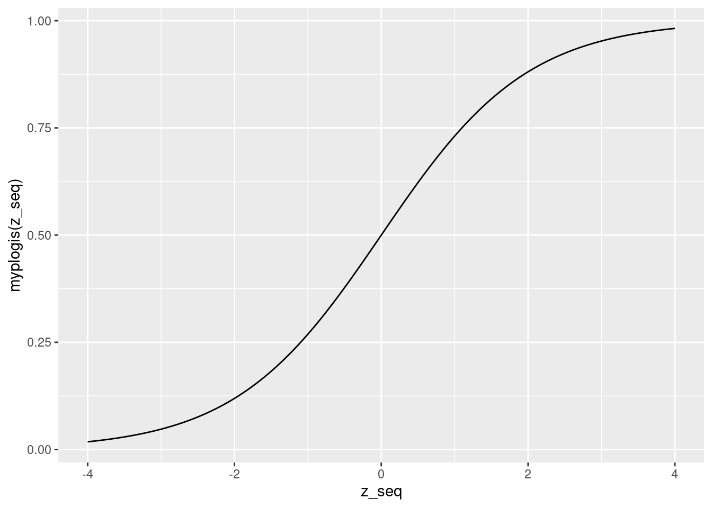
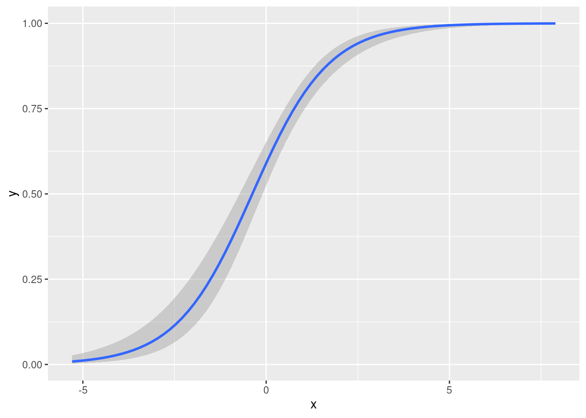
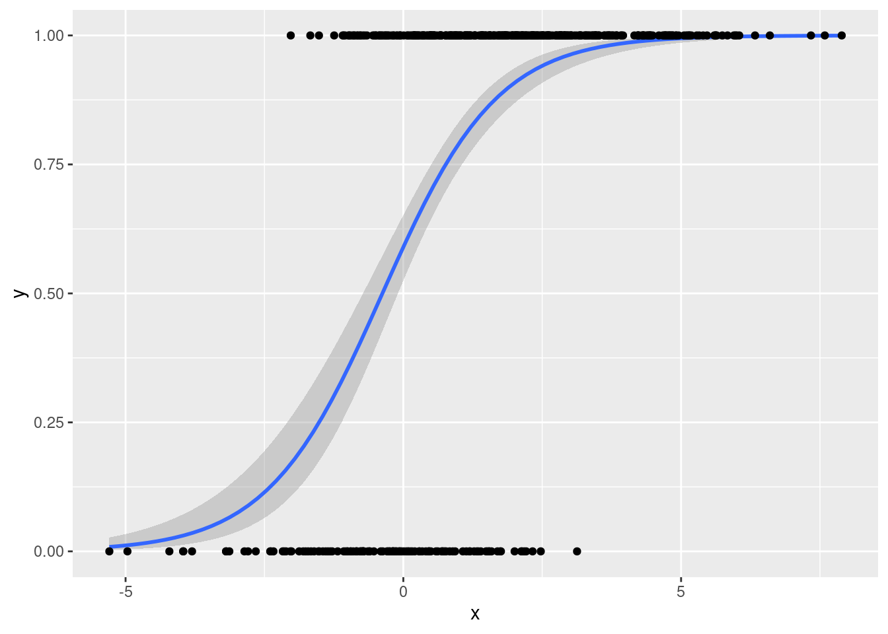
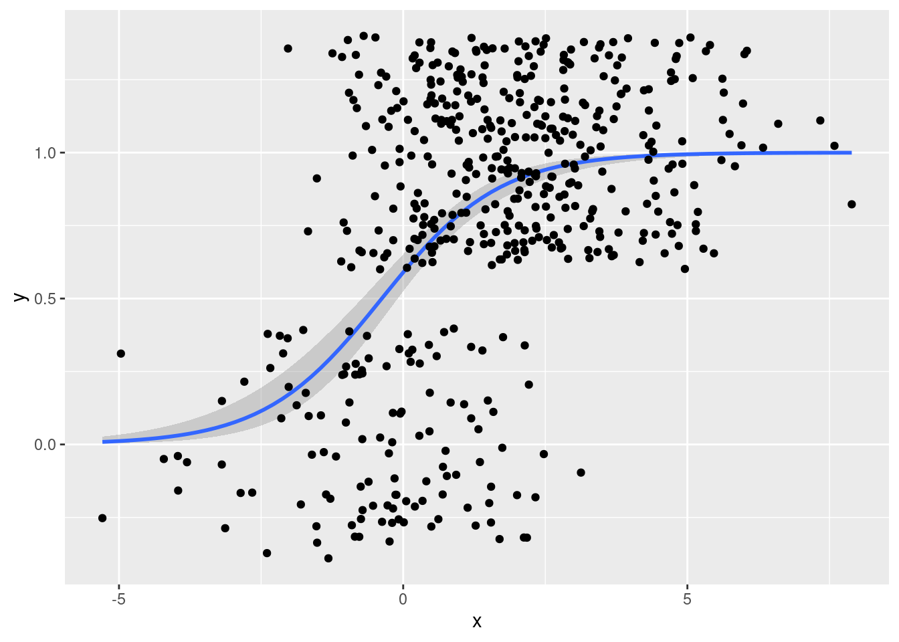
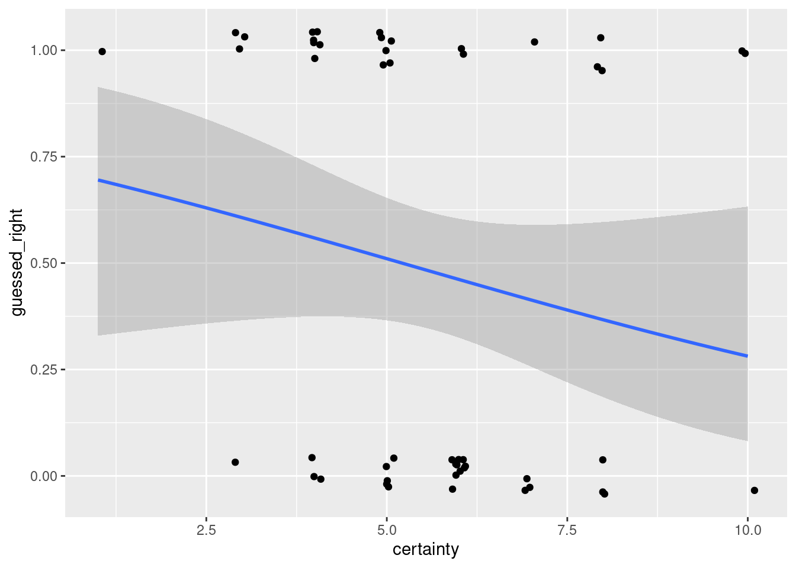
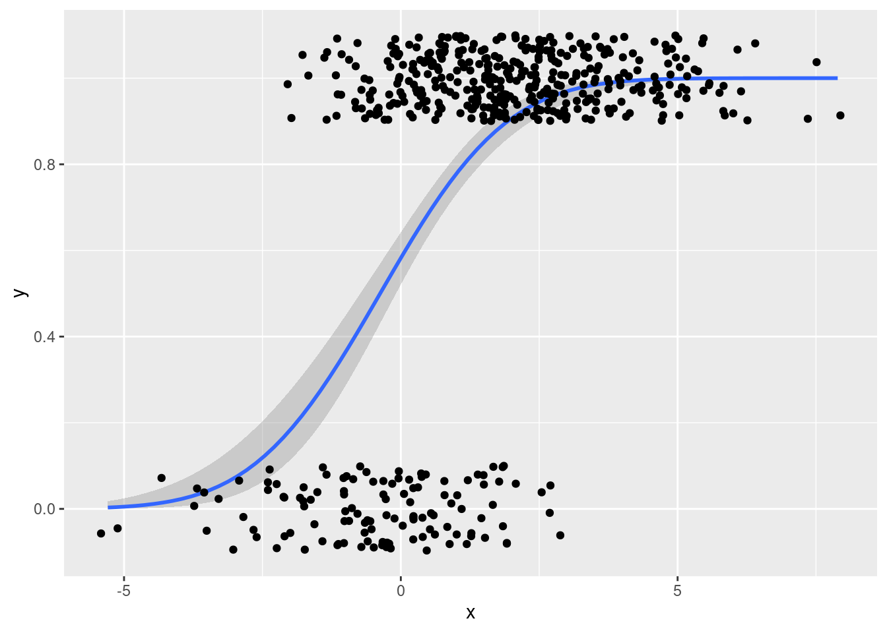

Lesson 6 Logistic Regression and Friends
This chapter is about regression models for binary outcomes, models in which our outcome of interest \(Y\) takes on one of two mutually exclusive values: yes/no, smoker/non-smoker, default/repay, etc. By convention we code one of the two possibilities as a "success," assigning it the value 1, and the other a "failure," assigning it the value 0. Here's a simple and entertaining example. I recently asked my MPhil students at Oxford to play a game called "two truths and a lie."21 The class divided into groups of four, and we then took it in turns to make three statements to the other members of our groups: two true statements, and one lie. The remaining three group members were tasked with determining which statement was a lie and assigning an overall "certainty score" ranging from zero (just guessing) to ten (completely certain). So how accurate are these subjective certainty scores? This question amounts to asking how the probability of guessing correctly, \(Y = 1\), varies with the certainty score, \(X\).
Our task in this lesson will be propose, interpret, and estimate regression models for the probability that \(Y= 1\) given \(X\), where \(X\) is a vector of one or more predictor variables. While \(Y\) is binary, \(X\) could be continuous, discrete, or a mix of the two. Models like this can be used for causal inference, but for now we will scrupulously avoid using any causal language. Our problem for the moment is simply to predict \(Y\). A natural question is "why not just use linear regression?" Indeed this is one possibility, as we'll discuss below. The fundamental problem is that lines have the same slope everywhere: they keep going up or down forever at the same rate. Probabilities, on the other hand, are bounded between zero and one. If we want a regression model that is guaranteed to make predictions in this range, it can't be linear.
Our main focus in this lesson will be logistic regression, far and away the most popular model for binary outcomes. Towards the end, we'll briefly discuss probit regression. Each of these is an example of an index model, a model of the form \(P(Y=1|X) = G(X'\beta)\) where \(G(\cdot)\) is known function. Roughly speaking, the idea is to stick our usual linear regression predictor \(X'\beta\) inside a function \(G(\cdot)\) that makes predictions on the right scale. For logistic regression \(G(z) = \texttt{plogis}(z)\) the standard logistic CDF; for probit regression \(G(z) = \texttt{pnorm}(z)\), the standard normal CDF. Setting \(G(\cdot)\) equal to a CDF ensures that our predictions will indeed lie between zero and one!
Compared to the usual treatment of logistic regression in econometrics, we will devote much more time to understanding the meaning of the model and much less time to technical details. This is because I assume that your econometrics course likely took the opposite approach. If you're hankering for more technical details, or if you want to brush up on the basic details of logistic regression, you can view my MPhil teaching materials here.
6.1 Understanding the Logistic Regression Model
From a purely probabilistic perspective, there are two equivalent ways of thinking about logistic regression: \[ P(Y=1|X) = \texttt{plogis}(X'\beta) \quad \iff \quad \log \left[\frac{P(Y=1|X)}{P(Y=0|X)}\right] = X'\beta. \] The first of these expresses the probability that \(Y=1\) given \(X\) as a nonlinear function of data and parameters; the second expresses the log odds that \(Y=1\) given \(X\) as a linear function of data and parameters.22 This means that we can either think of logit regression as an index model for \(P(Y=1|X)\) or as a linear regression model for the log odds. Many people, even those with extensive training in probability, find odds to be a slightly strange concept. In fact odds, and especially log odds, are very natural.23 If you'll permit a short digression, I'd like to take this opportunity to change your mind about odds.
6.1.1 Odds aren't so odd!
Forget about regression for the moment and consider some event \(A\) with probability \(p\) of occurring. Then we say that the odds of \(A\) are \(p/(1 - p)\). For example, if \(p = 1/3\) then the event \(A\) is equivalent to drawing a red ball from an urn that contains one red and two blue balls: the probability gives the ratio of red balls to total balls. The odds of \(A\), on the other hand, equal \(1/2\): odds give the ratio of red balls to blue balls. Viewed from this perspective, there's nothing inherently more intuitive about probabilities compared to odds. We're simply more familiar with probabilities.
But perhaps you're still not convinced. Here's an example that you've surely seen before:
One in a hundred women has breast cancer \((B)\). If you have breast cancer, there is a 95% chance that you will test positive \((T)\); if you do not have breast cancer \((B^C)\), there is a 2% chance that you will nonetheless test positive \((T)\). We know nothing about Alice other than the fact that she tested positive. How likely is it that she has breast cancer?
It's easy enough to solve this problem using Bayes' Theorem, as long as you have pen and paper handy: \[ \begin{aligned} P(B | T) &= \frac{P(T|B)P(B)}{P(T)} = \frac{P(T|B)P(B)}{P(T|B)P(B) + P(T|B^C)P(B^C)}\\ &= \frac{0.95 \times 0.01}{0.95 \times 0.01 + 0.02 \times 0.99} \approx 0.32. \end{aligned} \] But what if I asked you how the result would change if only one in a thousand women had breast cancer? What if I changed the sensitivity of the test from 95% to 99% or the specificity from 98% to 95%? If you're anything like me, you would struggle to do these calculations in your head. That's because \(P(B|T)\) is a highly non-linear function of \(P(B)\), \(P(T|B)\), and \(P(T|B^C)\).
In contrast, working with odds makes this problem a snap. The key point is that \(P(B|T)\) and \(P(B^C|T)\) have the same denominator, namely \(P(T)\): \[ P(B | T) = \frac{P(T|B)P(B)}{P(T)}, \quad P(B^C | T) = \frac{P(T|B^C)P(B^C)}{P(T)} \] Notice that \(P(T)\) was the "complicated" term in \(P(B|T)\); the numerator was simple. Since the odds of \(B\) given \(T\) is defined as the ratio of \(P(B|T)\) to \(P(B^C|T)\), the denominator cancels and we're left with \[ \text{Odds}(B|T) \equiv \frac{P(B|T)}{P(B^C|T)} = \frac{P(T|B)}{P(T|B^C)} \times \frac{P(B)}{P(B^C)}. \] In other words, the posterior odds of \(B\) equal the likelihood ratio, \(P(T|B)/P(T|B^C)\), multiplied by the prior odds of \(B\), \(P(B)/P(B^C)\): \[ \text{Posterior Odds} = \text{(Likelihood Ratio)} \times \text{(Prior Odds)}. \] Now we can easily solve the original problem in our head. The prior odds are 1/99 while the likelihood ratio is 95/2. Rounding these to 0.01 and 50 respectively, we find that the posterior odds are around 1/2. This mean's that Alice's chance of having breast cancer is roughly equivalent to the chance of drawing a red ball from an urn with one red and two blue balls. There's no need to convert this back to a probability since we can already answer the question: it's considerably more likely that Alice does not have breast cancer. But if you insist, odds of 1/2 give a probability of 1/3, so in spite of rounding and calculating in our heads we're within 0.3% of the exact answer!
Repeat after me: odds are on a multiplicative scale. This is their key virtue and the reason why they make it so easy to explore variations on the original problem. If one in a thousand women has breast cancer, the prior odds become 1/999 so we simply divide our previous result by 10, giving posterior odds of around 1/20. If we instead changed the sensitivity from 95% to 99% and the specificity from 98% to 95%, then the likelihood ratio would change from \(95/2 \approx 50\) to \(99/5 \approx 20\). It's also easy to work out the effect of conditioning on additional sources of information. To compute the posterior odds after a second positive test result with the same sensitivity and specificity as the first and conducted independently of it, simply multiply by the likelihood ratio a second time. This is worth repeating: each positive test result has the effect of multiplying the prior odds by the same factor.
Since odds are on a multiplicative scale, log odds are on an additive scale \[ \log(\text{Posterior Odds}) = \log\text{(Likelihood Ratio)} + \log\text{(Prior Odds)}. \] Base 2 logarithms are simplest for computers, natural logarithms are simplest for mathematics, and base 10 logarithms are simplest for human beings. So for a moment let's think in base 10. A good diagnostic test might have a sensitivity and specificity of around 90%; an better one might have values of 99%; an excellent one might have values of around 99.9%. These translate into likelihood ratios of 9, 99, and 999 respectively. On a log base ten scale these are approximately 1, 2, and 3. A common disease might have a prevalence of 10%; a rarer one 1%; and an even rarer one 0.1%. Expressed as prior odds, these values become 1/9, 1/99, and 1/999 or -1, -2, and -3 on the log base 10 scale. The log posterior odds are simply the sum of these two numbers. For example, a sensitivity and specificity of 10% and a prevalence of 1% gives log odds of approximately \(1 - 2 = -1\). This means that the odds of having the disease are around \(1/10\). A second positive result multiplies the odds by the likelihood ratio a second time. On the log scale this means adding 1, yielding log odds of 0 and odds of 1/2. This kind of reasoning is extremely helpful for quick, back-of-the-envelope calculations about how much to change our views in the light of new evidence. It's also extremely helpful for understanding logistic regression. But before returning to our regularly-scheduled programming, here are a few exercises to test your understanding.
6.1.2 Exercise
- I haven't given you a closed-form expression for
plogis(). Use the log-odds representation of logit regression to work out an explicit formula, then create a function calledmyplogis()that implements it in R. Check that your function gives the same results as the "real"plogis()function on a grid of 400 equally spaced points between -4 and 4. Then plot your function on the same range.
Let \(p \equiv P(Y=1|X)\). We are given two expressions: \(p = \texttt{plogis}(X'\beta)\) and \(\log[p/(1-p)] = X'\beta\). Exponentiating both sides and re-arranging gives \(\exp(-X'\beta) = (1-p)/p\). Solving for \(p\), we obtain \(p = 1/[1 + \exp(-X'\beta)]\). But since \(p = \texttt{plogis}(X'\beta)\) this means that \(\texttt{plogis}(z) = 1/[1 + \exp(-z)]\). Equivalently, we could multiply the numerator and denominator by \(\exp(z)\) to write \(\texttt{plogis}(z) = \exp(z)/[1 + \exp(z)]\).
myplogis <- function(z) {
1 / (1 + exp(-z))
}
z_seq <- seq(from = -4, to = 4, length.out = 400)
all.equal(myplogis(z_seq), plogis(z_seq))## [1] TRUElibrary(ggplot2)
qplot(z_seq, myplogis(z_seq), geom = 'line')
- Exercise: probabilities are between 0 and 1. What about odds? What about log odds?
Odds are between 0 and \(+\infty\). Since \(p\in [0,1]\) the ratio \(p/(1 - p)\) cannot be negative, but we can make it arbitrarily large by taking \(p\) close to one. Log odds are the log of something that is between zero and positive infinity, so they are between \(-\infty\) and \(+\infty\).
- If the probability of an event is \(1/2\), what are the odds? What about the log odds? What does this tell us about the qualitative interpretation of odds and log odds?
A probability of 1/2 corresponds to odds of \((1/2) / (1 - 1/2) = 1\) and log odds of \(\log(1) = 0\). Thus, odds of one mean "as likely as not," odds greater than one mean "more likely than not," and odds less than one mean "less likely than not." Log odds of zero mean "as likely as not," positive log odds mean "more likely than not," and negative log odds mean "less likely than not."
- Generalizing the Bayes rule example from above, let \(\pi\) be the prior probability of breast cancer, \(\text{SENS}\) be the sensitivity of the test and \(\text{SPEC}\) be the specificity of the test. Suppose that we observe the results of \(N\). Of these \(N^+\) are positive the rest are negative. Write down an expression for the odds that Alice has breast cancer, assuming that each test statistically independent of the others conditional on a person's true breast cancer status. (Unconditionally, the tests definitely aren't independent!)
FILL IN LATER!
6.1.3 Interpreting a Simple Logit Regression Model
To summarize our digression and exercises from above: probabilities are mathematically inconvenient because they're bounded above and below. This is the reason for the non-linearity in Bayes' Theorem expressed on the probability scale. In contrast, odds are simpler: they're multiplicative, bounded below by zero, and unbounded above. Odds of one mean \(A\) and \(A^C\) are equally likely. Log odds are even simpler: they're additive and unbounded. Log odds of zero mean that \(A\) and \(A^C\) are equally likely. Now it's time to use this knowledge to help us understand logistic regression. Our goal is to understand how changing \(x\) affects \(P(Y=1|X=x)\) under the model.
Let's start with the simplest possible example: \(p(x) \equiv P(Y=1|X=x) = \texttt{plogis}(\alpha + \beta x)\) where \(X\) is a scalar. What is the derivative of \(p(x)\) with respect to \(x\)? By the chain rule, \[ \frac{d}{dx} \texttt{plogis}(\alpha + \beta x) = \beta \times \texttt{dlogis}(\alpha + \beta x) \] where \(\texttt{dlogis}(\cdot)\) is the standard logistic density. Since \(\texttt{dlogis}(\cdot)\) is a density it can't be negative, so the derivative has the same sign as \(\beta\). Its magnitude, however, depends on the value of \(x\) at which we evaluate it and on the value of \(\alpha\). On the probability scale, partial effects for logit regression are non-linear. Because it's a CDF, \(\texttt{plogis}(\cdot)\) eventually "flattens out." Increasing \(x\) by one unit therefore cannot have the same effect on \(P(Y=1|X=x)\) when the baseline value of \(x\) as it does when the baseline value is high.
As above, everything's easier with odds. As you'll show in the exercise below, \[ \frac{\texttt{plogis}(z)}{1 - \texttt{plogis}(z)} = \exp(z) \implies \text{Odds}(Y=1|X=x) = \exp(\alpha + \beta x) \] Therefore, increasing \(x\) by one unit is equivalent to multiplying the odds that \(Y=1\) by \(\exp(\beta)\). This holds true regardless of the values of \(\alpha\) or \(x\). Log odds are even simpler since \(\text{log Odds}(Y=1|x) = \alpha + \beta x\). Notice that we've observed the same phenomenon here as in our Bayes' rule example from above. This is partly down to the magic of odds, and partly due to the specific structure of the logit model. These same results wouldn't go through for probit regression or other index models: the function \(\texttt{plogis}(\cdot)\) is extremely mathematically convenient.
6.1.4 Exercise
- Perhaps you've heard of the "divide by four rule." It goes like this: if you divide a logistic regression coefficient by four, you'll obtain the maximum possible effect of changing the associated regressor by one unit on the predicted probability that \(Y = 1\). Where does this rule come from?
Above we found that the derivative of \(\texttt{plogis}(\alpha + \beta x)\) with respect to \(x\) was \(\beta \times \texttt{dlogis}(\alpha + \beta x)\). We also noted that dlogis() is the standard logistic density, so it can't be negative. This means that the sign of the effect equals the sign of \(\beta\). The magnitude, however, depends on the value of \(\texttt{dlogis}(\alpha + \beta x)\). To get the largest possible magnitude, we need to make dlogis() as large as possible. This density is symmetric with a mode at zero:
x_seq <- seq(-4, 4, length.out = 400)
qplot(x_seq, dlogis(x_seq), geom = 'line')
The "divide by four" rule arises because the height of the logistic density at zero is 1/4
dlogis(0)## [1] 0.25- The quantity \(\beta \times \texttt{dlogis}(\alpha + \beta x)\) is usually called the partial effect of \(x\). I write \(x\) to denote a realization of the random variable \(X\), so \(x\) is constant whereas \(X\) is random. In contrast, the average partial effect is defined as \(E[\beta \times \texttt{dlogis}(\alpha + \beta X)]\). and the partial effect at the average is \(\beta \times \texttt{dlogis}(\alpha + \beta E[X])\). Do these two coincide in general? Why or why not? What question does each of them answer?
They do not in general coincide because \(E[f(X)]\) does not in general equal \(f(E[X])\). (Linear/affine functions are the special case in which you can exchange \(E\) and \(f\).) The average partial effect answers this question: "suppose I slightly increased x for everyone in my population of interest; how would my predicted probabilities that \(Y = 1\) change on average?" The partial effect at the average answers a different question: "suppose I found someone whose x value equals the population mean; if I increased her x by a small amount, how would my predicted probability that \(Y = 1\) change?"
- Consider two people: one has \(X = x_2\) and the other has \(X = x_1\). Under the simple logistic regression model from above, what is the odds ratio for these two people? In other words, what is the ratio of the odds that \(Y=1\) for person two relative to those for person one?
The odds for person two are \(\exp(\alpha + \beta x_2)\) while those for person one are \(\exp(\alpha + \beta x_1)\). Taking the ratio of these gives \(\exp\left\{\beta (x_2 - x_1) \right\}\).
- Show that \(\texttt{plogis}(z) / [1 - \texttt{plogis}(z)] = \exp(z)\).
FILL IN LATER
6.2 Simulating Data from a Logistic Regression
There are many different ways to simulate draws from a logistic regression. Here are two. One possibility is to simulate Bernoulli draws with probabilities determined by plogis() and \(X_i\), namely
\[
Y_i|X_i \sim \text{indep. Bernoulli}(p_i), \quad p_i \equiv \texttt{plogis}(X_i'\beta).
\]
Another is to generate a latent continuous variable \(y^*_i\) from a linear regression with logistic errors, and then transform the result into a binary observed outcome \(y_i\), in particular
\[
y_i^* = X_i'\beta + \epsilon_i, \quad
y_i = \left\{ \begin{array}{cc}
1 & \mbox{if } y^*_i > 0\\
0 & \mbox{if } y^*_i \leq 0\\
\end{array}\right., \quad
\epsilon_i \sim \mbox{ iid Logistic}(0,1).
\]
To give us some data to play with, I'll use the second approach. In an exercise below, you'll be asked to supply code for the first approach.
The R function rlogis() creates iid draws from the logistic distribution. If we only specify one argument, rlogis() assumes that this is the number of random draws that we wish to make, and sets the values of its location and scale parameters to 0 and 1, respectively. This is what we want, since these parameters correspond to the Logistic\((0,1)\) distribution that appears in the latent data formulation from above. Using rlogis(), we can simulate data from a logistic regression model as follows:
set.seed(1234)
n <- 500
alpha <- 0.5
beta <- 1
x <- rnorm(n, mean = 1.5, sd = 2)
ystar <- alpha + beta * x + rlogis(n)
y <- 1 * (ystar > 0)
mydat <- data.frame(x, y)In this case I've chosen to draw x from a normal distribution with mean 1.5 and standard deviation 2. Given the values of alpha and beta that I've chosen, this means that \(Y=1\) is considerably more likely than not:
mean(y)## [1] 0.7566.2.1 Exercise
My simulation code from above employed the latent variable approach: rather than using the function plogis() I generated standard logistic draws using rlogis() to form an unobserved continuous outcome variable ystar. Write code that simulates from the same logistic regression model without generating any random logistic draws or creating a latent continuous variable ystar.
# These lines are identical to those from above so we get the same x-values:
set.seed(1234)
n <- 500
alpha <- 0.5
beta <- 1
x <- rnorm(n, mean = 1.5, sd = 2)
# Here's the only thing that changes:
y <- rbinom(n, size = 1, prob = plogis(alpha + beta * x))
mydat2 <- data.frame(x, y)6.3 Running a Logistic Regression in R
Now we're reading to use the simulated dataset mydat to carry out logistic regression. Perhaps this strikes you as a silly idea. We generated the data so we know the true values of \(\beta_0\) and \(\beta_1\). Why bother carrying out logistic regression to estimate them?
There are two answers to this question. First, this is only an example: don't be so picky!
Second, it can be extremely valuable to work with simulated data to check whether our statistical methods are working correctly. If we know for sure that the data came from a logistic regression model, then our logistic regression estimates should be close to the truth. If they're not, then something is wrong with our computer code.
The R function glm can be used to carry out logistic regression. The name of this function is an acronym for generalized linear model. Generalized linear models (GLMs) are exactly what their name says, a generalization of linear regression. GLMs include logistic regression as a special case. To tell glm that we want to carry out a logistic regression, we need to specify family = binomial(link = 'logit'). Otherwise the syntax is practically identical to that of lm. We specify a formula, y ~ x, and indicate a dataframe in which R should look to find y and x:
lreg <- glm(y ~ x, mydat, family = binomial(link = 'logit'))
summary(lreg)##
## Call:
## glm(formula = y ~ x, family = binomial(link = "logit"), data = mydat)
##
## Deviance Residuals:
## Min 1Q Median 3Q Max
## -2.61173 0.04538 0.30466 0.63221 1.88450
##
## Coefficients:
## Estimate Std. Error z value Pr(>|z|)
## (Intercept) 0.3630 0.1344 2.700 0.00693 **
## x 0.9638 0.1004 9.596 < 2e-16 ***
## ---
## Signif. codes: 0 '***' 0.001 '**' 0.01 '*' 0.05 '.' 0.1 ' ' 1
##
## (Dispersion parameter for binomial family taken to be 1)
##
## Null deviance: 555.65 on 499 degrees of freedom
## Residual deviance: 381.74 on 498 degrees of freedom
## AIC: 385.74
##
## Number of Fisher Scoring iterations: 6Notice that the output of summary when applied to a glm object is a little different from what we've seen for lm objects. For now, let's focus on what's the same. We still obtain the estimates of each of the coefficients in our model, along with standard errors, test statistics, and p-values. We can use this information to carry out statistical inference exactly as we do with linear regression: R has already done all the hard work for us by calculating the standard errors. As you'll see in the following exercises, the functions from the broom and modelsummary packages that you learned in our lessons on linear regression work just as well with glm objects as they do with lm objects.
6.3.1 Exercise
- Construct approximate 95% confidence intervals for the parameters \(\beta_0\) and \(\beta_1\) based on the logistic regression output from above. Do your confidence intervals include the true parameter values that we used to simulate the data?
The confidence interval for the regression intercept is approximately 0.36 \(\pm\) 0.27 which includes the true value: \(\alpha=\) 0.5. Similarly, the confidence interval for the regression slope is 0.96 \(\pm\) 0.2 which includes the true value: \(\beta =\) 1.
- Interpret the estimated slope coefficient from
lreg.
Consider two people: Alice has a value of \(x\) that is one unit higher than Bob's value of \(x\). Our model predicts that the log odds of \(Y = 1\) are 0.96 higher for Alice than for Bob. Equivalently, we predict that Alice's odds of \(Y=1\) are a multiplicative factor of \(\exp(0.96) \approx 2.6\) larger than Bob's odds. Whether this is a large or a small difference measured on the probability scale depends on Alice's specific value of \(x\).
- Try using
coef()withlreg. What do you get? Does it work as expected? Now try thebroomfunctionstidy()andglance()and long with the functionmodelsummary()from themodelsummarypackage. What do you get?
# They work as expected!
library(broom)
library(modelsummary)
tidy(lreg)## # A tibble: 2 × 5
## term estimate std.error statistic p.value
## <chr> <dbl> <dbl> <dbl> <dbl>
## 1 (Intercept) 0.363 0.134 2.70 6.93e- 3
## 2 x 0.964 0.100 9.60 8.34e-22glance(lreg)## # A tibble: 1 × 8
## null.deviance df.null logLik AIC BIC deviance df.residual nobs
## <dbl> <int> <dbl> <dbl> <dbl> <dbl> <int> <int>
## 1 556. 499 -191. 386. 394. 382. 498 500modelsummary(lreg)| Model 1 | |
|---|---|
| (Intercept) | 0.363 |
| (0.134) | |
| x | 0.964 |
| (0.100) | |
| Num.Obs. | 500 |
| AIC | 385.7 |
| BIC | 394.2 |
| Log.Lik. | −190.872 |
| F | 92.077 |
| RMSE | 0.88 |
- As we discussed above, \(\beta\) is not the partial derivative of \(\texttt{plogis}(\alpha + \beta x)\) with respect to \(x\).
- Use the "divide by 4" rule to calculate the maximum possible partial effect of \(x\) on the predicted probability that \(Y = 1\) using the results of
lreg. - Calculate the partial effect of \(x\) on the predicted probability that \(Y= 1\) at evaluated at the sample mean value of \(X\) (the partial effect at the average).
- Calculate the average partial effect of \(x\) over the observed sample.
- Compare your answers to (a), (b), and (c).
- Use the "divide by 4" rule to calculate the maximum possible partial effect of \(x\) on the predicted probability that \(Y = 1\) using the results of
# Divide by 4 rule
alpha_hat <- coef(lreg)[1]
beta_hat <- coef(lreg)[2]
beta_hat / 4## x
## 0.2409399# Partial effect at average x
beta_hat * dlogis(alpha_hat + beta_hat * mean(x))## x
## 0.1162997# Average partial effect
beta_hat * mean(dlogis(alpha_hat + beta_hat * x))## x
## 0.11774986.4 Predicted Probabilities for Logistic Regression
As you saw in the preceding exercises, many of the functions that we've already learned to use with lm objects generalize immediately to glm objects. One place were we need to be a bit careful is when we want to make predictions based on a fitted generalized linear model. The predict() function works for glm objects, but there's a slight wrinkle. If we want to calculate the predicted probability that \(Y_i = 1\), we need to specify the argument type = 'response'. For example, we can calculate the predicted probability that \(y_i = 1\) given that \(X_i = 0\) as follows:
predict(lreg, newdata = data.frame(x = 0), type = 'response')## 1
## 0.5897566Similarly, we can calculate the predicted probability that \(y_i = 1\) given that \(X_i\) equals the sample mean of \(X\) as follows:
predict(lreg, newdata = data.frame(x = mean(x)), type = 'response')## 1
## 0.8596206If we don't specify anything for newdata, then predict will give us the predicted probabilities for the observed values of \(X\), exactly
p_hat <- predict(lreg, type = 'response')
head(p_hat)## 1 2 3 4 5 6
## 0.37330981 0.91240407 0.98013788 0.06222354 0.93312689 0.941806746.4.1 Exercise
- Use the results of
lregto calculate the predicted probability that \(Y_i = 1\) when: (i) \(X_i = 0\) and (ii) \(X_i = \bar{X}\) without usingpredict. Check that your results agree withpredict().
alpha_hat <- coef(lreg)[1]
beta_hat <- coef(lreg)[2]
plogis(alpha_hat)## (Intercept)
## 0.5897566plogis(alpha_hat + beta_hat * mean(x))## (Intercept)
## 0.8596206- You may recall the function
augment()from thebroompackage that we used in an earlier lesson on linear regression. Read the help file foraugment.glm()from thebroompackage. This explains the behavior ofaugment()when applied to aglmobject rather than anlmobject. How can we useaugment()to calculate the same predictions aspredict(lreg, type = 'response')and append them tomydat?
augment(lreg, mydat, type.predict = 'response')## # A tibble: 500 × 8
## x y .fitted .resid .std.resid .hat .sigma .cooksd
## <dbl> <dbl> <dbl> <dbl> <dbl> <dbl> <dbl> <dbl>
## 1 -0.914 1 0.373 1.40 1.41 0.00797 0.874 0.00680
## 2 2.05 1 0.912 0.428 0.429 0.00349 0.876 0.000169
## 3 3.67 1 0.980 0.200 0.201 0.00240 0.876 0.0000245
## 4 -3.19 0 0.0622 -0.358 -0.360 0.00859 0.876 0.000290
## 5 2.36 1 0.933 0.372 0.373 0.00341 0.876 0.000123
## 6 2.51 1 0.942 0.346 0.347 0.00334 0.876 0.000104
## 7 0.351 1 0.668 0.898 0.899 0.00364 0.875 0.000909
## 8 0.407 0 0.680 -1.51 -1.51 0.00356 0.874 0.00381
## 9 0.371 1 0.673 0.890 0.892 0.00361 0.875 0.000884
## 10 -0.280 1 0.523 1.14 1.14 0.00528 0.875 0.00243
## # … with 490 more rows6.5 Plotting a Logistic Regression
We can plot a logistic regression function using a method very similar to the one we used to plot a linear regression:
library(ggplot2)
ggplot(mydat, aes(x, y)) +
stat_smooth(method='glm',
method.args = list(family = "binomial"),
formula = y ~ x) 
To add the datapoints, we just add geom_point()
library(ggplot2)
ggplot(mydat, aes(x, y)) +
stat_smooth(method='glm', method.args = list(family = "binomial"),
formula = y ~ x) +
geom_point()
This doesn't look very nice!
That's because there are only two possible \(y\)-values meaning that the observations will overlap substantially.
A helpful way to distinguish them visually is to add a bit of random noise to the points so they no longer overlap.
This is called jittering and ggplot2 will do it for us if we replace geom_point() with geom_jitter()
library(ggplot2)
ggplot(mydat, aes(x, y)) +
stat_smooth(method='glm', method.args = list(family = "binomial"),
formula = y ~ x) +
geom_jitter()
That's a bit too much random noise in the \(y\)-dimension.
We can control the amount of jittering by specifying width and height arguments to geom_jitter as follows
library(ggplot2)
ggplot(mydat, aes(x, y)) +
stat_smooth(method='glm', method.args = list(family = "binomial"),
formula = y ~ x) +
geom_jitter(width = 0.5, height = 0.1)
From this plot it is easy to tell that there are many more observations with \(Y = 1\) than \(Y = 0\), something that was not at all clear from the plot using geom_point().
6.5.1 Exercise
Data from the "two truths and a lie" experiment described at the beginning of these lesson are available from two-truths-and-a-lie-2022-cleaned.csv in the data directory of my website: https://ditraglia.com/data/.
- Read the dataset directly into R from the web, storing it in a tibble called
two_truths.
library(tidyverse)
data_url <- 'https://ditraglia.com/data/two-truths-and-a-lie-2022-cleaned.csv'
two_truths <- read_csv(data_url)- Run a logistic regression that predicts
guessed_rightbased oncertainty. Make a nicely-formatted table of regression results usingmodelsummary()and comment briefly on your findings.
The estimated coefficient for certainty is negative! This means that on average we predict more wrong guesses as students' subjective certainty in their guesses increases. But notice that our estimate is fairly noisy: the coefficient estimate is around -0.2 and the standard error is around 0.16. We haven't found any compelling evidence that the relationship runs in either direction. Maybe the 2023 Core ERM students will be more obliging!
two_truths_reg <- glm(guessed_right ~ certainty, family = binomial(link = 'logit'),
data = two_truths)
library(modelsummary)
modelsummary(two_truths_reg)| Model 1 | |
|---|---|
| (Intercept) | 1.020 |
| (0.932) | |
| certainty | −0.196 |
| (0.159) | |
| Num.Obs. | 50 |
| AIC | 71.6 |
| BIC | 75.5 |
| Log.Lik. | −33.814 |
| F | 1.524 |
| RMSE | 1.19 |
- Use
ggplot()to depict the regression from part 2, adding jittering to make the raw data clearly visible. You may need to adjust thewidthandheightparameters ofgeom_jitter().
two_truths %>%
ggplot(aes(x = certainty, y = guessed_right)) +
stat_smooth(method = 'glm', method.args = list(family = 'binomial'),
formula = y ~ x) +
geom_jitter(width = 0.1, height = 0.05)
6.6 Probit Regression and the Linear Probability Model
Thus far we've only discussed logistic regression, but there are many other models for binary outcome data. We've also restricted our attention to a model with a single regressor. In this section we'll introduce two common alternatives to logistic regression: "probit" and the "linear probability model." Then I'll turn you loose on a more substantial exercise with binary outcome data and multiple regressors.
6.6.1 Probit Regression
Whereas the logistic regression model posits that \(P(Y=1|X) = \texttt{plogis}(X'\beta)\), the probit regression model replaces plogis() with pnorm(). In other words, it substitutes a standard normal CDF for a standard logistic:
\[
P(Y=1|X) = \texttt{pnorm}(X'\beta)
\]
To simulate from this model, we can either combine rbinom() with pnorm() or use the following latent variable characterization:
\[
y_i^* = X_i'\beta + \epsilon_i, \quad
y_i = \left\{ \begin{array}{cc}
1 & \mbox{if } y^*_i > 0\\
0 & \mbox{if } y^*_i \leq 0\\
\end{array}\right., \quad
\epsilon_i \sim \mbox{ iid N}(0,1).
\]
Modifying my code from above, for example, we can simulate the following data from a probit regression model:
set.seed(1234)
n <- 500
alpha <- 0.5
beta <- 1
x <- rnorm(n, mean = 1.5, sd = 2)
ystar <- alpha + beta * x + rnorm(n)
y <- 1 * (ystar > 0)
probit_dat <- data.frame(x, y)The probit model is less convenient than logit mathematically because pnorm(), unlike plogis(), lacks a closed-form expression. This makes it much harder to give a simple interpretation to the regression coefficients: the various tricks that we used above with odds simply won't apply. We can still compute partial effects, however. Let \(G(\cdot)\) be the CDF of a continuous random variable and \(g(\cdot)\) be the corresponding density. Then we have
\[
\frac{\partial}{\partial x_j} G(x'\beta) = \beta_j \times g(x'\beta)
\]
For logistic regression \(G\) becomes plogis() and \(g\) becomes dlogis(); for probit regression these become pnorm() and dnorm(). This fact allows us to compute partial effects, average partial effects, and partial effects at the average almost exactly as we did for logistic regression above.
Fitting and plotting probit regression in R are also a snap. Simply change link = 'logit' to link = 'probit' as follows:
probit_reg <- glm(y ~ x, probit_dat, family = binomial(link = 'probit'))
tidy(lreg)## # A tibble: 2 × 5
## term estimate std.error statistic p.value
## <chr> <dbl> <dbl> <dbl> <dbl>
## 1 (Intercept) 0.363 0.134 2.70 6.93e- 3
## 2 x 0.964 0.100 9.60 8.34e-22library(ggplot2)
ggplot(mydat, aes(x, y)) +
stat_smooth(method='glm', method.args = list(family = binomial(link = 'probit')),
formula = y ~ x) +
geom_jitter(width = 0.5, height = 0.1)
6.6.2 The Linear Probability Model
The name makes it sound fancier that it is: the so-called linear probability model, or LPM for short, is just ordinary least squares. In other words, it's what you get if you ignore the fact that \(Y\) is binary and just run a linear regression. Expressed as a probability model, the LMH amounts to \(P(Y=1|X) = X'\beta\). There are three important things to know about this model. First, it's definitely wrong because it can make predictions that lie outside the range \([0,1]\). Second, it can nevertheless be a reasonable approximation over a range of values for \(X\). In your plot from above, you probably noticed that plogis(z) is close to linear for z between say -1.5 and 1.5. Third, the errors in this model are necessarily heteroskedastic. For more details on each of these three points, see my lecture video.
6.6.3 Exercise
This exercise is based on data from Mroz (1987; Econometrica), available as part of the R package wooldridge, a paper about married womens' labor supply decisions. For full details of the mroz dataset, enter ?mroz at the R console after installing and loading the wooldridge package. The variables that you'll work with below are as follows:
inlfequals 1 if in labor force, 1975nwifeincnon-wife income in $1000educyears of schoolingexperactual labor market experienceexpersqsquare ofexperagewoman's age in yearskidslt6number of kids < 6 yearskidsge6number of kids 6-18
The goal is to predict infl using the other variables in the preceding list. You'll consider three different models: logistic regression, probit regression, and the linear probability model.
- Create and store an R formula object called
labor_modelthat specifies the regression we want to run:inflis regressed on all the other variables. This formula will be the same for the logit, probit, and LPM specifications so we only want to type it out once!.
labor_model <- inlf ~ nwifeinc + educ + exper + expersq + age + kidslt6 + kidsge6- Fit the linear probability model, logistic regression, and probit regression specifications based on
labor_modelandmroz. Store your results aslpm,logit, andprobit, respectively. Uselm_robust
library(wooldridge)
library(estimatr)
lpm <- lm_robust(labor_model, data = mroz)
logit <- glm(labor_model, family = binomial(link = 'logit'), data = mroz)
probit <- glm(labor_model, family = binomial(link = 'probit'), data = mroz)- Use
modelsummary()to produce a nicely-formatted table of results for all three of the regressions from the previous part.
library(modelsummary)
mroz_regressions <- list('LPM' = lpm,
'logit' = logit,
'probit' = probit)
modelsummary(mroz_regressions)| LPM | logit | probit | |
|---|---|---|---|
| (Intercept) | 0.586 | 0.425 | 0.270 |
| (0.153) | (0.860) | (0.508) | |
| nwifeinc | −0.003 | −0.021 | −0.012 |
| (0.002) | (0.008) | (0.005) | |
| educ | 0.038 | 0.221 | 0.131 |
| (0.007) | (0.043) | (0.025) | |
| exper | 0.039 | 0.206 | 0.123 |
| (0.006) | (0.032) | (0.019) | |
| expersq | −0.001 | −0.003 | −0.002 |
| (0.000) | (0.001) | (0.001) | |
| age | −0.016 | −0.088 | −0.053 |
| (0.002) | (0.015) | (0.008) | |
| kidslt6 | −0.262 | −1.443 | −0.868 |
| (0.032) | (0.204) | (0.118) | |
| kidsge6 | 0.013 | 0.060 | 0.036 |
| (0.014) | (0.075) | (0.044) | |
| Num.Obs. | 753 | 753 | 753 |
| R2 | 0.264 | ||
| R2 Adj. | 0.257 | ||
| AIC | 819.5 | 818.6 | |
| BIC | 856.5 | 855.6 | |
| Log.Lik. | −401.765 | −401.302 | |
| F | 21.785 | 25.501 | |
| RMSE | 1.04 | 1.04 | |
| Std.Errors | HC2 |
- The magnitudes of your logit, probit, and LPM coefficients from the preceding part are not directly comparable: they are on different scales. One way to make the logit and probit results roughly comparable to each other is by rescaling them to be maximum partial effects. You know how to do this for logistic regression: divide by four. Determine the equivalent rescaling for probit regression. Then rescale and compare the slope coefficients from
probitandlogitabove.
To find the appropriate re-scaling for probit regression, we need to know the maximum possible value of \(\texttt{dnorm}(X'\beta)\). This occurs when \(X'\beta\) is zero. Since \(\texttt{dnorm}(0) = 1/\sqrt{2\pi}\approx 0.4\), we multiply our logit slope coefficients by 0.25 and our probit slope coefficients by 0.4
cbind(lpm = coef(lpm)[-1], # remove first element (intercept)
logit = 0.25 * coef(logit)[-1],
probit = 0.4 * coef(probit)[-1]) %>% # tidyverse needed for the pipe!
round(3)## lpm logit probit
## nwifeinc -0.003 -0.005 -0.005
## educ 0.038 0.055 0.052
## exper 0.039 0.051 0.049
## expersq -0.001 -0.001 -0.001
## age -0.016 -0.022 -0.021
## kidslt6 -0.262 -0.361 -0.347
## kidsge6 0.013 0.015 0.014- A more involved but potentially more accurate way of making your results comparable across LPM, logit, and probit specifications is by reporting average partial effects. Compare the average partial effects of the three models.
The partial effects for linear regression are constant: lines have constant slopes. This means you only need to transform the logit and probit results. A helpful tip is to remember that if we don't specify type = 'response' when we apply the function predict() to a glm object, it will return predictions on the scale of \(X'\beta\) rather than \(Y\). Moreover, if we don't specify newdata, the predictions are made using the observed sample data for \(X\).
# Average of g(x'beta_hat) where g is dlogis
# (predict defaults to the scale of x'beta_hat)
logit_APE_factor <- mean(dlogis(predict(logit)))
logit_APE_factor## [1] 0.1785796# Average of g(x'beta_hat) where g is dnorm
# (predict defaults to the scale of x'beta_hat)
probit_APE_factor <- mean(dnorm(predict(probit)))
probit_APE_factor ## [1] 0.3007555# Extract estimated coefficients, excluding the first (the constant)
lpm_est <- coefficients(lpm)[-1]
logit_est <- coefficients(logit)[-1]
probit_est <- coefficients(probit)[-1]
# Rescale the logit and probit estimates to obtain APEs
cbind(lpm = lpm_est, logit_APE = logit_APE_factor * logit_est,
probit_APE = probit_APE_factor * probit_est) %>%
round(3)## lpm logit_APE probit_APE
## nwifeinc -0.003 -0.004 -0.004
## educ 0.038 0.039 0.039
## exper 0.039 0.037 0.037
## expersq -0.001 -0.001 -0.001
## age -0.016 -0.016 -0.016
## kidslt6 -0.262 -0.258 -0.261
## kidsge6 0.013 0.011 0.0116.7 Addendum: Odds and Ends about Risk

Logistic regression is often used to talk about risk. For example: what is the risk that a baby born to a mother with characteristics \(X\) will have a low birthweight? How does this risk vary across mothers with different characteristics? There are many different ways to pose this question, and it's important not to mix them up. Confusion on this score is common, so it's worth taking a moment to distinguish three concepts: risk differences, relative risk, and odds ratios.
Consider two mothers: one with characteristics \(x_1\) and another with characteristics \(x_2\). If we take \(x_1\) as our "baseline," then the risk difference is \[ \begin{aligned} \text{Risk Difference} &\equiv P(Y=1|X=x_2) - P(Y=1|X=x_1)\\ &= \texttt{plogis}(\alpha + x_2'\beta) - \texttt{plogis}(\alpha + x_1'\beta) \end{aligned} \] This is simply the difference of probabilities: it tells us how much higher or lower the probability of having a low birthweight baby is for a mother with \(X=x_2\) compared to \(X=x_1\). In contrast, the relative risk is a ratio: \[ \text{Relative Risk} \equiv \frac{P(Y=1|X=x_2)}{P(Y=1|X=x_1)} = \frac{\texttt{plogis}(\alpha + x_2'\beta)}{\texttt{plogis}(\alpha + x_1'\beta)}. \] This tells us how many times more or less likely a mother with \(X = x_2\) is to have a low birthweight baby compared to a mother with \(X = x_1\). The odds ratio is yet another ratio: \[ \begin{aligned} \text{Odds Ratio} &\equiv \frac{P(Y=1|X=x_2)/P(Y=0|X=x_2)}{P(Y=1|X=x_1)/P(Y=1|X=x_1)} = \frac{\exp(\alpha + x_2'\beta)}{\exp(\alpha + x_1'\beta)}\\ &= \exp\left\{ (x_2 - x_1)'\beta\right\}. \end{aligned} \] Each of these measures is a perfectly reasonable answer to the question "how does the risk vary across the two mothers?" But each is also on a completely different scale: in general they are not directly comparable. Before asking if a number is big or small, we first have to be clear about what is being measured.
People often confuse odds ratios with relative risk. This is tempting for three reasons. First, they're both ratios. Second, when the event \(\{Y=1\}\) is extremely rare, the two measures give similar results.24 Third, when the two measures are not comparable, the odds ratio is often quite a lot larger, and therefore sounds more impressive! Consider two examples. In the first, \(P(Y=1|X=x_2) = 0.1\) while \(P(Y=1|X=x_1)= 0.05\), so the relative risk is \(2\) and the odds ratio is \(2.11\). In the second, \(P(Y=1|X=x_2)= 0.8\) and \(P(Y=1|X=x_1)=0.4\) so the relative risk remains \(2\) while the odds ratio shoots up to \(6\). Again, there's nothing wrong with odds ratios: they're simply not equivalent to relative risk. In the second example it would be a gross exaggeration to claim that "setting \(X = x_2\) makes \(Y=1\) six times more likely!" It is the odds that increase by a factor of six, not the probability.
Even in cases where the odds ratio and relative risk are similar, there's still room for confusion. Suppose I tell you that going from \(X=x_2\) to \(X = x_1\) increases your mortality risk: the relative risk and odds ratio are both around 2. Should this worry you? It depends. Increasing your probability of death from 0.000005% to 0.00001% gives a relative risk and odds ratio of 2, but pales in comparison to the danger of driving a car. When the baseline probability is low, the relative risk and odds ratio can be high despite the risks involved being negligible.
6.7.1 Exercise
Explain the cartoon at the beginning of this section.
If I gave you the answer, the joke wouldn't be funny anymore! But if you really want to spoil all the fun, see this link.